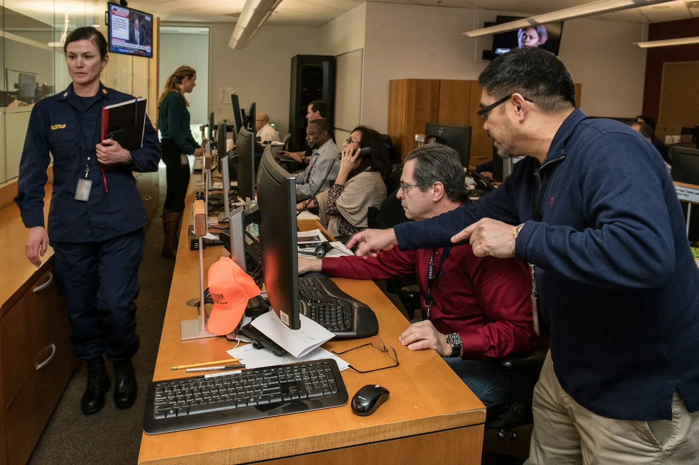

Deprem Sonrası İlk 24 Saat: En Kritik Eylem Planı
Ardışık artçılar, kesilen iletişim hatları ve belirsizlik... İlk 24 saat, enkaz altına girmeden önce kendinizi, sevdiklerinizi ve mahallenizi organize etmenin zamanıdır. Bu interaktif rehber, ilk dakikalardan gün sonuna kadar neleri önceliklendireceğinizi gösterir.

İlk saatlerde güvenlik taraması ve mahalle koordinasyonu hayat kurtarır.
Hemen Sonra (0-2 Saat)
- Artçı sarsıntılar için güvenli noktaya geçerek binanızı terk edin.
- Elektrik, doğalgaz ve su vanalarını kapatın; kıvılcım yaratacak cihazları fişten çekin.
- Whatsapp/Telegram üzerinden “İyiyim” mesajı atarak hatları meşgul etmeden yakınlarınızı bilgilendirin.
Interaktif 24 Saat Planlayıcısı
Butonlara dokunarak hangi zaman aralığında nelere odaklanmanız gerektiğini görün.
Sağlık Tarama Çemberi
Çevrenizde “yaralı var mı?” diye dolaşın, küçük yaraları dahi kayıt altına alın.
Radyo ve AFAD Dinleme
Radyo veya AFAD uygulamasından resmi uyarıları takip edin, yanlış haberleri yaymayın.
Mahalle Görev Dağılımı
Enkaz gözetleme, lojistik, çocuk ve yaşlı bakımı için 3 ekip çıkarın.
Su Hijyen Kontrolü
Şebeke suyunu 10 dk kaynatın; varsa tablet kullanın, bidonları etiketleyin.
Enerji Planı
Powerbank, jeneratör ve araç akülerini paylaştırarak nöbetleşe şarj planı yapın.
Psikolojik İlk Yardım
Çocuklara ve yükselen kaygı yaşayanlara nefes egzersizleri yaptırın, umut mesajı paylaşın.
Kontrol Paneli: Kişisel Görev Listesi
İhtiyaçlarınıza göre aşağıdaki görevleri işaretleyin. Her işaretleme, telefonunuzda yerel olarak tutulur.
Mahalle Dayanışması İçin Mikro Görevler
Çocuklara artçıların normal olduğunu anlatın, onları sorumluluk vererek meşgul edin (battaniye dağıtımı, su taşıma gibi).
Engelli, yaşlı ve kronik hastaları tek bir çadırda toplayın, ilaç çizelgesini görünür yere asın.
Sosyal medya üzerinden teyitsiz bilgi paylaşmayın; sadece ihtiyaç/konum koordinasyonu için kullanın.
Sık Yapılan Hatalar
- Artçı sürerken ağır hasarlı binalara dönmek.
- Acil yardım hattını aramak yerine sosyal medya yorumlarına yanıt beklemek.
- Çocukların yanında yüksek sesle panik ve kayıp haberleri konuşmak.